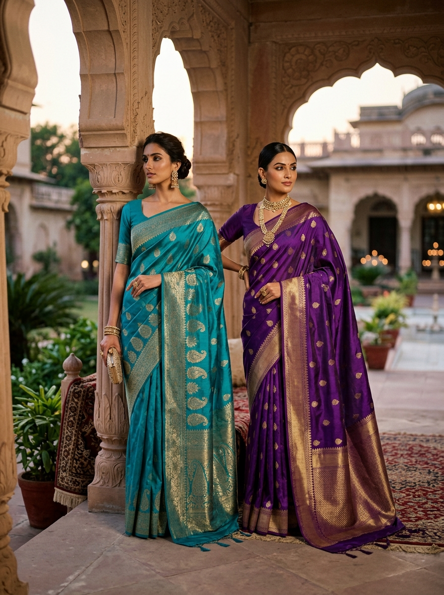
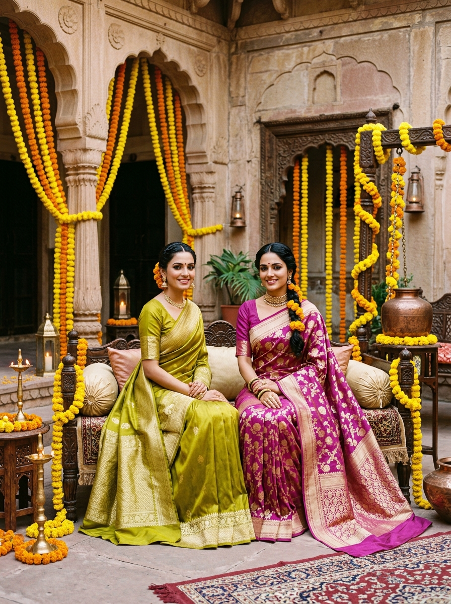
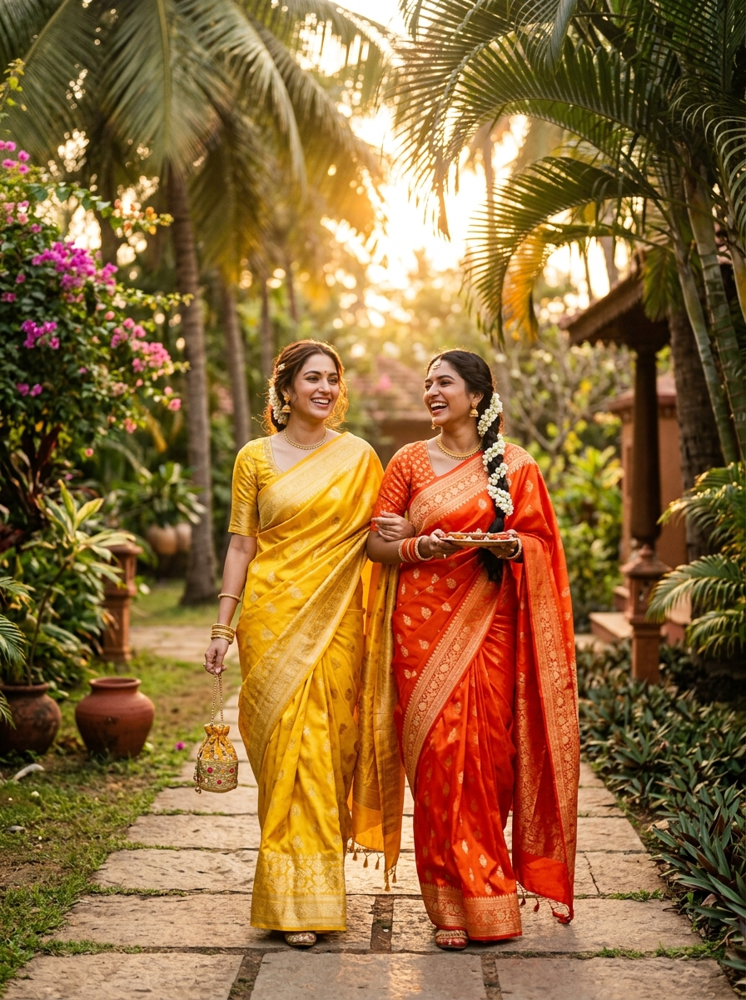
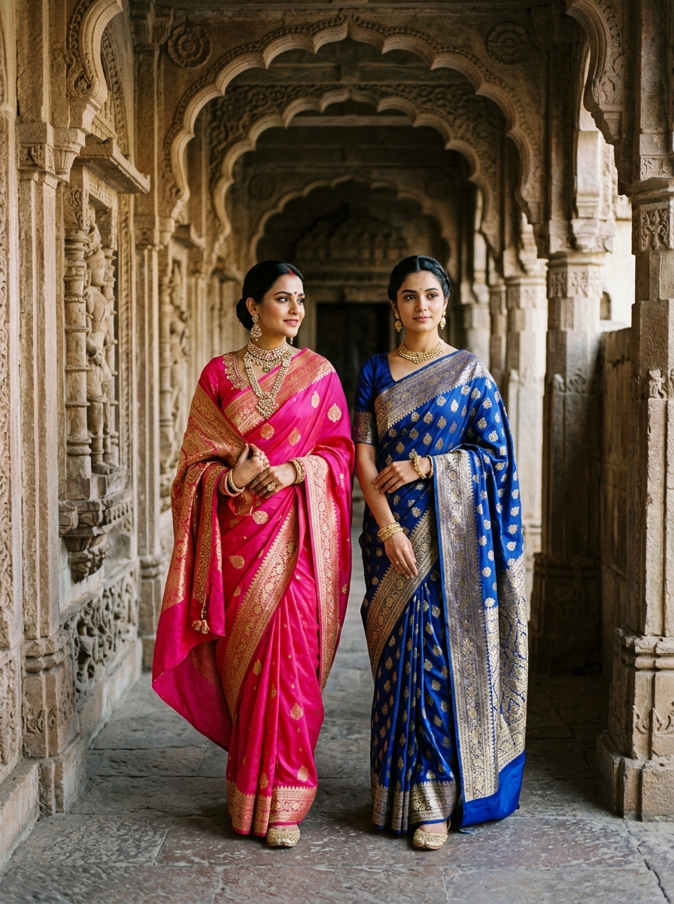
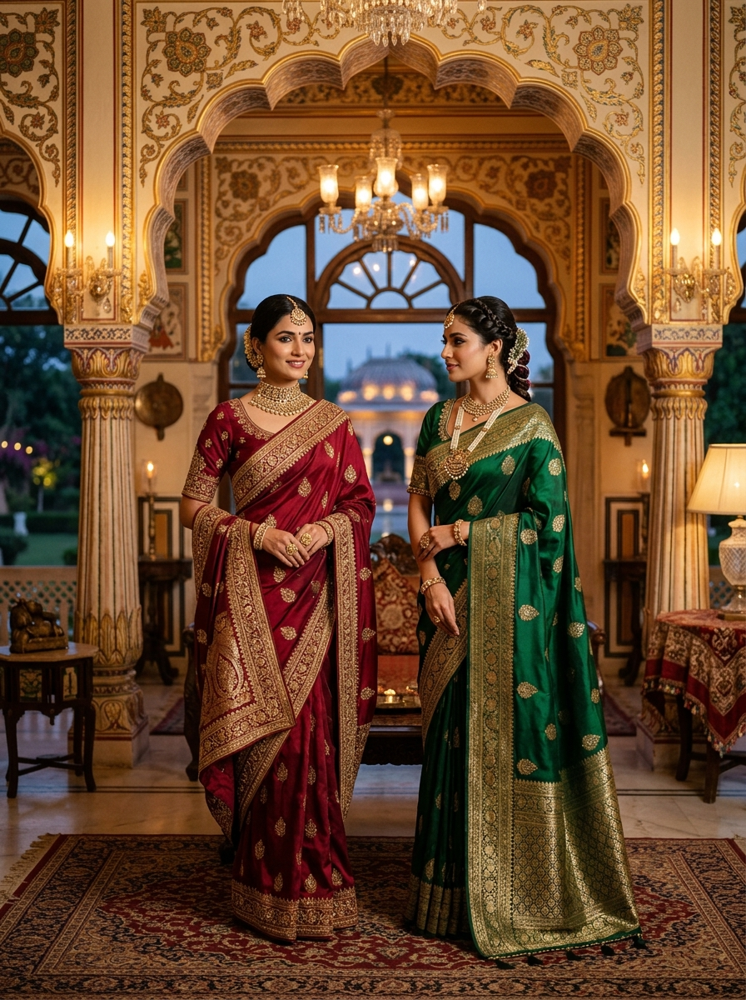
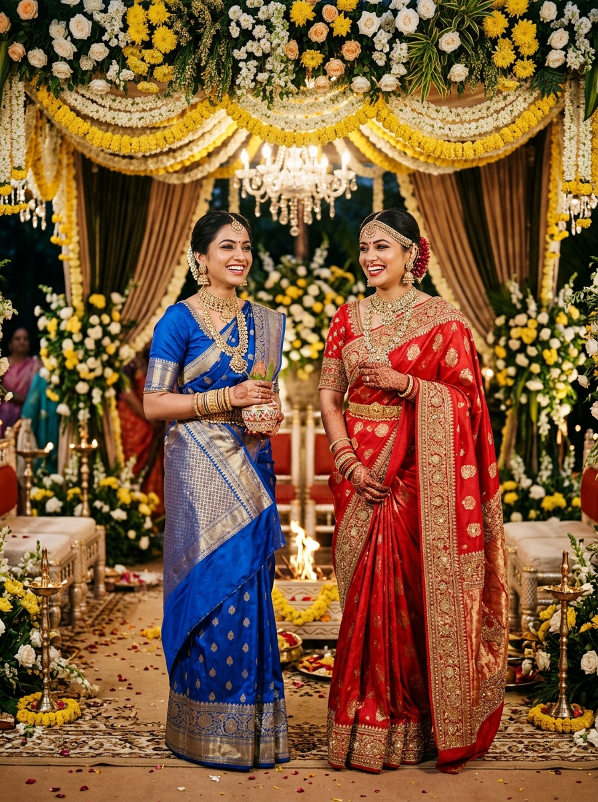
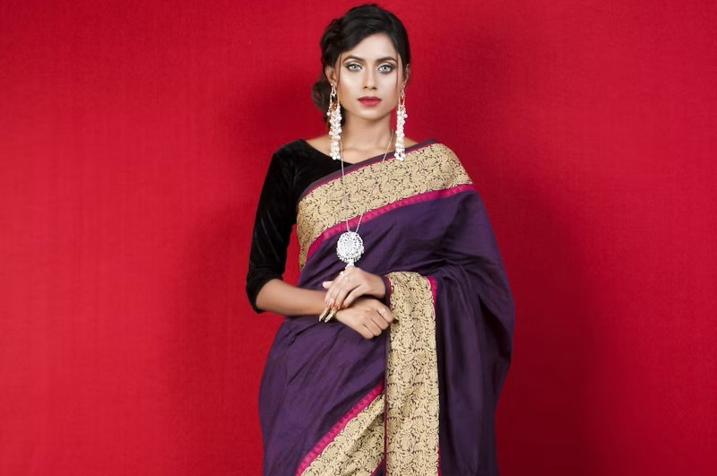

WEDDING EDIT
An heirloom created to outlive decades, passing from mother to daughter with unspoken grace.
Discover sarees curated for every occasion...
every story, every version of you.







Every thread carries a memory. Every weave carries generations of craftsmanship, patience, and ancestral intuition.
At Aaranya, we believe a saree is neither costume nor relic. It is a living canvas of Indian textile sovereignty—reimagined with contemporary fluidity, nuanced palettes, and uncompromised purity of raw silk.
Five distinct expressions of timeless Indian textile craftsmanship, draped for the modern sovereign.
 01
01
Hand-spun pure katan silk enriched with intricate gold kadwa motifs inspired by ancient Mughal architecture.
02
Heavyweight mulberry silk with interlocking korvai borders and solid gold zari korvai weaves.
 03
03
Featherweight handwoven silk organza illuminated with hand-painted flora and scalloped gota patti borders.
 04
04
100-count French flax spun by hand with subtle jamdani botanical inlays for effortless daytime dignity.
 05
05
Our crowning masterwork. 180 days of handloom artistry featuring pure gold electroplated bullion wire and uncut gems.
A dramatic interpretation of twilight in Varanasi. Woven on traditional pit-looms with raised gulab motifs.
Featuring antique petalled borders joined by master weavers with seamless interlocking petni technique.
Translucent as morning mist over the Ganges. Embellished with subtle real silver marodi handwork.
Breathes with natural coolness. Features supplementary weft motifs woven entirely by eye without templates.
A legacy heirloom destined to be revered. Adorned with traditional peacock motifs in 24-karat gold plating.

“When my hands throw the shuttle across the loom, I am not merely counting threads. I am speaking the language my great-grandfather taught my father.”
In an era dominated by rapid synthetic production, Aaranya champions direct fair-trade stewardship. We partner with over 40 heritage weaving families across Varanasi, Kanchipuram, and Murshidabad, ensuring artisan pensions, medical sovereignty, and craft preservation.
Every saree purchased directly funds the education of young apprentices at our weaving guilds in Uttar Pradesh & Tamil Nadu.
Six yards of unstitched freedom. An intimate transformation in four graceful acts.
Measure 5 to 7 sharp, disciplined pleats with your fingertips. Each pleat should fall with rhythmic symmetry, allowing the weight of the silk to create an accordion cascade that flows organically as you walk.
Secure the tucked pleats slightly to the left of your navel. Circle the remaining fabric around your torso with seamless fluid tension, sculpting your silhouette with unrestrictive poise.
Draw the ornate pallu across your chest and let it fall effortlessly over the left shoulder. Allow the heavy brocade border to cascade behind you like a regal ceremonial trail.
Stand tall and feel the weight of centuries settle around your frame. The saree adapts to your natural breathing—a majestic second skin of handcrafted elegance.
Hover over each edition to preview our atelier collections.
FOLLOW THE STORY
@AARANYA.OFFICIAL
